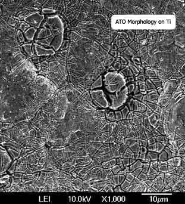

Tin Oxide Anodes
.

Anodes of Doped Tin Oxide are sometimes called Semiconductor Anodes. There is a large array of different types. Tin Oxide (SnO2, Stannic Oxide) doped with Sb (Antimony/Tin Oxide or ATO). Also Tin Oxide doped with Bi is another, (SnO2/Bi2O3, BTO).
The ATO Anode does not appear to be very useful for Perchlorate making as mentioned below. It may be usable for Chlorate making. This type of Anode has found application in waste water treatment as it has a high Oxygen evolution potential (will not liberate Oxygen) when used in these's applications, eg. US 4839007. Also see further reading section.
There is a discussion of obtaining DTO (Doped Tin Oxide) coatings in the section on Ti substrate LD Anodes as ATO is used as an interface coating between Ti and Lead Dioxide.
In order to test an ATO Anode a Perchlorate cell was set up using almost pure Chlorate. An ATO Anode was run in this cell for approx. four times the theoretical (100% CE) run time of the cell.
A sample of solid was obtained by evaporating a portion of cell liquid. The Chlorate content of this solid was found to be 69%. Therefor the Anode appears not to be a good Perchlorate making Anode.
Below is a discription of making an ATO coatings (for use under Lead Dioxide) from RPW.
This is my procedure to prepare Ti/PbO2 Anode with
SnO2+SbOx(Sb2O5+Sb2O3) inter layer.
The Ti plates (5 × 1 × 0.1 cm) were used as substrates. Prior to
using as substrates, they were polished with 320-grit sandpaper,
degreased in 40 wt% NaOH solution at 80C for 2h, etched in a boiling 10 %
oxalic acid solution during 1 h, after that, they were rinsed with
distilled water and dried naturally. (If you don't have oxalic acid
solution,sometime concentrated hydrochloric acid also works, you should see a
purple solution during the boiling Ti plate, this step is very important,
only via this you can remove the TiO2 insulting layer. Remember: Do not
use raw water in this step, distilled water is necessary.
The SnO2+Sb interlayer was prepared following a standard thermal
decomposition method and the procedures were as follows:
A solution
containing SnCl4:5H2O and SbCl3 was
dissolved in a mixture of n-butanol(or ethonal)+HCl.(eg. 4g SnCl4:5H2O +
0.2g SbCl3 + 9ml n-butanol + 1ml HCl solution, you can made about 5
anodes, the best mol ratio is SnO2: Sb=100:4~8). The precursor solution was
distributed onto the pretreated Ti plates by brushing. The solvent was
dried in air or a oven(90C,a hair dryer also ok), and the electrode
was introduced into an oven at 450C for 10 min for the decomposition of
the salt and the formation of the metal oxides. This process was
repeated for 15-20 times. A final annealing of the electrode was performed at
about 500C for 1h.
(PbO2 was then applied to this anode)
The PbO2 activated layer was prepared by electrochemical deposition
method, First deposition in 170-230 g/L Pb(NO3)2 and 18-30g/L HNO3 at
70C and the current was 70mA/cm2 for 2h. (this was to prepare
Alfa-PbO2)Then deposition at 40mA/cm2 for another 3 hour.(remember the Fe ion
must be removed,the bubbles occuring during the deposition also needs to be
removed). Sometimes 0.25g/L NaF was added to the solution. This raises the Oxygen overpotential (less O bubbles on Anode and may also dope the
LD).
Other examples of Semiconductor coatings (actually used as undercoats for LD on Ti) from RPW are:
1, Ti/SnO2+Sb+MnOx/PbO2
2, Ti/SnO2+Sb/PbO2
3, Ti/SnO2+MnOx+Y/PbO2(quite good)
4,Ti/SnO2+CeO2/PbO2(have shortest service life)
5, Ti/SnO2+Sb+CF/PbO2 has been prepared by others in my lab, (CF=Carbon fiber, this Anode is said to be the best)
See also:
Preparation, Micromorphology and Stability of Tin Dioxide Thin Films @
http://www.rials-science.ttp.net/3-908450-19-5/435/
Using SnCl4:5H2O to obtain an Sb/Sn Oxide coat on Titanium
has been described as useful for Perchlorate making in US 4272354
United States Patent 3627669 SnO2 + Sb2O3 coated
electrode for brine electrolysis.
Making Antimony Trichloride
Making Stannic Chloride
Test for DTO coating
Set up a power supply to give an open circuit voltage of approx. 7 Volts and a short circuit current of approximately 40mA per square cm on the
Anode to be tested. If your supply cannot output enough current then only test a small piece of the end of the Anode.
Place the Anode into a concentrated solution of Sodium Chloride with the Anode well surrounded with Cathode approx. one inch from Anode.
Connect to power. At the start of the test the Voltage across the cell with be approx. 3.2 to 4.2 Volts. It may rise up about 0.2 Volts and remain
constant for at least 10 hours test period (days in fact if it's a proper coating). The current shall be 40mA per square cm on the Anode surface though out the test period.
That's my test, perhaps it is a sensible test, perhaps not. Don't test a device that is going to be coated further. Only test an
experimental Anode in order to see if you are having success. You will then be able to judge a good coating by experience
(color, texture, processing etc). Do not go through the prodedure of obtaining a Tin Oxide coating and assume that you have a working coat because the process can be somewhat fickle.
Ti substrate size
The size of the Ti substrate need not be very heavy. IMO it is more difficult to obtain successful ATO coats on thick pieces of Ti that on more lighter and thinner pieces. 2mm thick substrates should be considered thick enough though pieces that are 3mm thick have had successful coats of ATO applied. 1.5mm is ideal IMO. The fact that it appears to be more difficult to obtain successful coats of ATO on thicker Ti may have something to do with the rate of rise of temperature as the substrate is baked (especially for the first time). Most professional setup's have an oven that circulates air which will give quicker temperature rise times (and more O2 availability) for the forming coat unlike an oven where there is little movement of air. You may run into problems if using heavy rod Ti as a substrate.
Etching Titanium
If the Titanium has been coated before it may require a greater time in the etching bath for to get rid of the previous coating(s). If the Ti has been handled much or there is cutting oil on it, it must be degreased first before etching starts. This can be performed with kitchen cleaner and a scouring pad. The Ti should then be washed down with dishwasher detergent.
The grades of Ti that are alloyed with Al (usually 6Al4V, meaning 6% Al & 4% Vanadium) is easy to etch in 12% HCl at room temperature once you start it off by sandpapering the Ti. Grade one is more difficult with the 12% HCl needing to be at a minimum of 85C. Heat the acid first and then put Ti into it. If the acid is heated from room temperature with the Ti in the acid it will not etch. If the Ti is sandpapered before going into acid this will guarantee a start to etching. It is probably best to use 20% HCl to hurry things up. A pot of 12% HCl left to boil will become 20% HCl as the water boils away.
Grade four is very difficult to etch with hot HCl having no effect. It can be etched using molten NaOH or HF acid (BOTH DANGEROUS). A product which may be useful for etching Ti is a paste sold in welding shops for cleaning Stainless Steel after it is welded. It contains HF & Nitric Acid. It may be called CromeBrite or some such.
Oxalic acid can also be used to etch Ti. A 10% solution in water has been used. It has been claimed that Oxalic acid gives a superior etch as it attacks the Ti grain bounderies more aggressively that HCl. Heat to 80°C or more before placing Ti into the etch bath.
When etched the Ti can be washed. Use distilled water or perhaps solvent. Do not use raw water as the Ti must be kept very clean at this stage. Keep the Titanium held in such a way so that the unetched (top) part is at the bottom so that no run-off comes from the unetched area onto the etched part. This caused streaks and may stop ATO from forming. Washing the etched Ti in clean 12% HCl and not drying (give it a shake and stop run-off from unetched part to etched part) before applying the ATO percursor has also been succussful at this stage.
Most sources dry the Ti at this stage.
Solvents
Solvents tried when making DTO solution precursor via SnCl4:5H2O were Methanol, Ethanol, IsoProply Alcohol and also a mixture of water and Methanol. It would
appear that the solvent used is not critical. I have had much success using distilled methylated spirits. Too much water may cause the Antimony Trichloride to react and precipitate as an insoluble compound. The patents usually use Butanol (Butyl Alcohol, n-Butyl Alcohol, Butan-1-ol) though Butanol give a non viable ATO coat when used in exactly the same way as Ethanol (distilled methylated spirits).
Tin Salts
The vast majority of examples in the patents use SnCl4:5H2O and Antimony Trichloride in the DTO precursor solution. SnCl4:5H2O is not readily available.
Attempts were made to form a DTO coating using SnCl2:2H2O (Tin(ii) Chloride, Stannous Chloride, or Tin Mordant) as a direct substitute for SnCl4 (simply dissolving in the solvent) via pyrolysis. No success was had, with the DTO coating failing from zero to 30 minutes after being placed in a test cell.
This link describes a successful procedure for using SnCl2:2H2O to obtain a conductive Tin Oxide coat on Titanium.
| Some useful symbols |
| Element | Symbol | Atomic weight |
| Titanium | Ti | 204.4 |
| Tin | Sn | 118.69 |
| Antimony | Sb | 121.75 |
| Bismuth | Bi | 208.98 |
| Oxygen | O | 16 |
| Chlorine | Cl | 35.45 |
| Nitrogen | N | 14 |
|
| Some useful formula |
| Name | Name | Formula | Molecular Weight | % actual Metal |
| Stannic Chloride | Tin(IV) Chloride | SnCl4 | 260.5 |
45.5% Sn |
| Stannic Chloride Pentahydrate | Tin(IV) Chloride |
SnCl4:5H2O | 350.5 | 33.9% Sn |
| Stannous Chloride | Tin(II) Chloride | SnCl2 |
189.59 | 62.6% Sn |
| Stannous Chloride Dihydrate | Tin(II)Chloride | SnCl2:2H2O |
225.6 | 52.6% Sn |
| Tin Oxide | Tin(IV) Oxide | SnO2 |
150.7 | 78.76% Sn |
| Antimony Trichloride | Antimony(III) Chloride | SbCl3 |
228.1 | 53.4% Sb |
| Antimony Trioxide | Antimony(III) Oxide |
Sb2O3 | 291.5 | 83.5% Sb |
| Bismuth Nitrate | Bismuth Nitrate |
Bi(NO3)3:5H2O | 485.0 | 43.1% Bi |
| Bismuth Chloride | Bismuth Trichloride |
BiCl3 | 315.3 | 66.3% Bi |
| Bismuth Chloride Dihydrate | Bismuth Trichloride Dihydrate |
BiCl3:2H2O | 351.3 | 59.5% Bi |
|
HIT THE BACK BUTTON ON YOUR BROWSER
BACK TO TOP